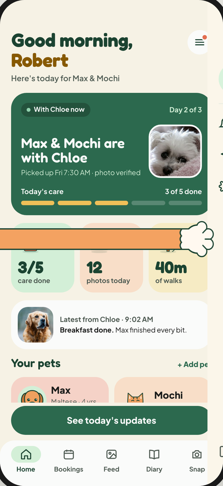
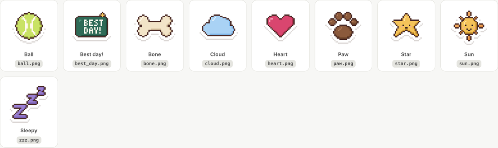
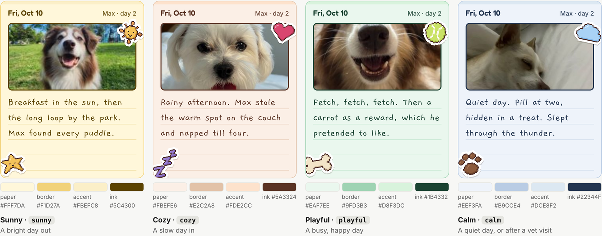
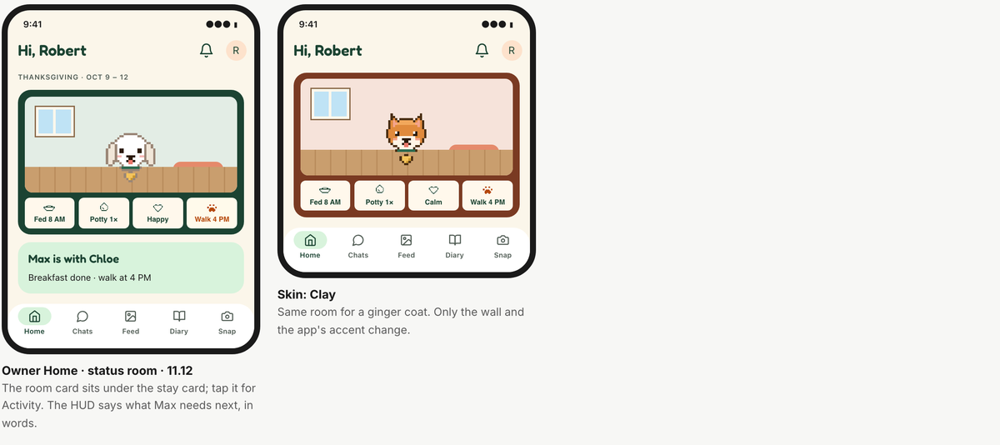
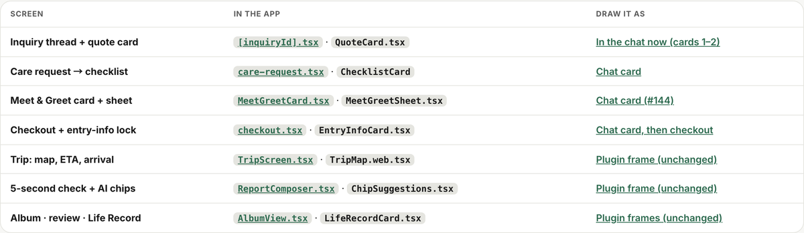
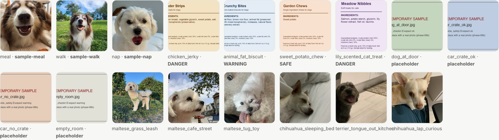

Design work · Oct 18디자인 작업 · 10월 18일
Oct 18 · done and in review10월 18일 · 완료와 리뷰 중
- In review리뷰 중#147 Home headerRole chip, bell, ≡ menu drawer; Log out in the menu and Settings역할 칩, 벨, ≡ 메뉴 서랍, 로그아웃은 메뉴와 설정에 PR #178 ↗#147 ↗
- In review리뷰 중#120 Sitter calendarB + D: next openings, then month and day pagesB + D: 다음 빈 날, 그다음 달력과 하루 페이지 PR #183 ↗Options안
- Later나중에#119 Skins and pixel petsDrafted, not a priority초안, 우선순위 아님 #119 ↗
- Done완료#117 Wrap up #41 and #54Closed; #41 replaced by #178닫음, #41은 #178로 대체 #117 ↗
- In review리뷰 중Expressive look in the app앱에 익스프레시브 룩Pills, tinted cards, tab bar, pixel coin logo알약 버튼, 색 카드, 탭 바, 픽셀 코인 로고 PR #177 ↗
- Done완료Figma cleanupFigma 정리Archive page, pixel coin, component fixes; the plugin keeps themArchive 페이지, 픽셀 코인, 컴포넌트 수정, 플러그인이 유지 Figma ↗PR #129 ↗
Visual notes비주얼 노트






For Minsik민식 님께
Review in this order (stacked):이 순서로 리뷰해 주세요(쌓여 있어요):
Question (#183): can sitter search pass the owner's dates to the sitter profile, for a “Free for your dates” card?질문 (#183): 시터 검색에서 오너의 날짜를 시터 프로필로 넘겨줄 수 있을까요? “Free for your dates” 카드에 필요해요.
Oct 19 · plan (draft)10월 19일 · 계획 (초안)
- First먼저Check Minsik's Devpost submission민식 님의 Devpost 제출 확인Read it through; flag anything missing or out of date처음부터 읽고, 빠졌거나 오래된 내용 표시
- Prep준비Tuesday Oct 20 webinar10월 20일 화요일 웨비나Attending for the team, and I may present: prepare talking points and the demo path팀 대표로 참석, 발표할 수도 있어요: 말할 내용과 데모 경로 준비
- Morning오전Review replies, then close what's done리뷰 답, 그다음 끝난 것 닫기#111 frames and #112 screens map look done; #113 has 4 photo gaps; #114 stickers drafted#111 프레임과 #112 화면 지도는 끝난 듯, #113 사진 빈칸 4개, #114 스티커 초안 #111#112#113#114
- Afternoon오후Large-text onboarding + “at a glance”큰 글씨 온보딩 + “한눈에”The one big P0, needed by Oct 22큰 P0 하나, 10/22까지 #115 ↗
- Plan계획Demo video shot list데모 영상 장면 목록Record after the Oct 28 freeze10/28 동결 뒤에 녹화 #116 ↗
- If time여유 있으면Diary papers, then skins다이어리 종이, 그다음 스킨 #118#119